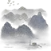
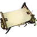
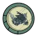
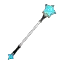
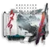
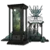
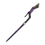

目录
饥荒联机版MOD介绍——夕
夕-明日方舟同人MOD
Dusk - Arknights
作者&代码：古明地ボール
*创意工坊页面：
【明日方舟】夕（正式版）
*反馈群：1042311872，加群获取完整介绍
*该页面仍有不少错误，欢迎指正。
模组角色
模组物品

墨染幻甲
墨染幻甲-强化
涂鬼神

绘境藏玄

墨染勋章
幻墨神笔

“星稀”

无题长卷

“终夜无寐”（上卷）
一级精英化券
二级精英化券
湮墨殷染尽拙山
拙山方晓尽梦长
夕泡泡雕像
幻造·第三只眼
岩崩锤
幻造·月时计

意义非凡的法杖
宇智波团扇